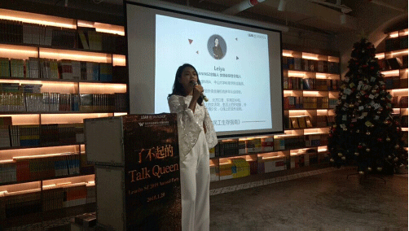
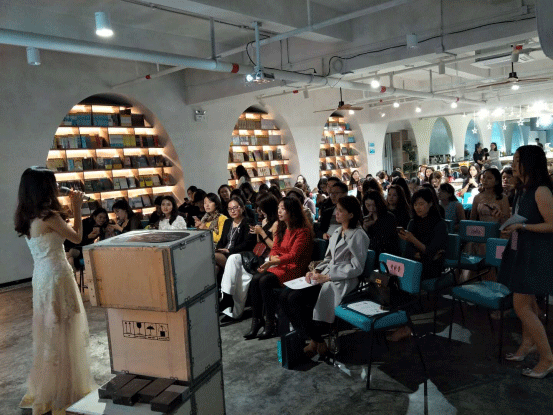
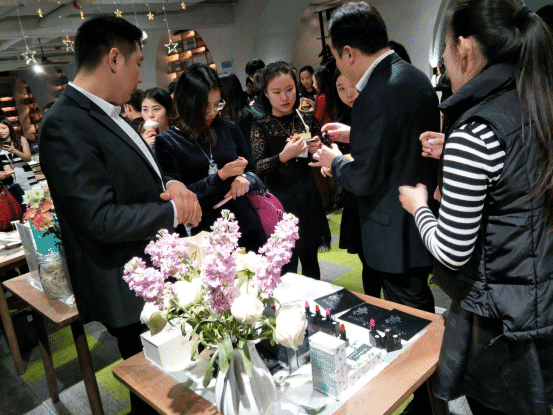
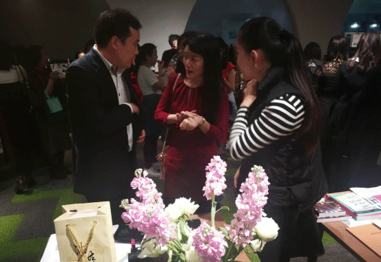
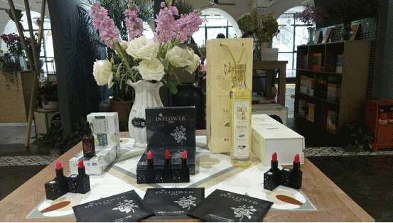

近年来，有关女性领导力话题的讨论渐成趋势，应该说这是一个喜人的现象。一方面，这一话题的流行，标志着女性在商业世界与社会活动中起到了越来越重要的作用，另一方面也说明了即使在今天这个高度开明的时代，人们对女性走上领导者位置仍旧持有一定的怀疑。从过去的“女强人”到今天的“女汉子”，凡是女性在工作与生活中展示了较为硬朗的一面，就会被打上“男性化”的烙印。与此同时，这样的女领导也被众人在心理上视为“另类”而“敬而远之”了。也就是说，女性领导在人们眼中的“正常化”尚需时日。
2018年1月20日，由Lean In Shenzhen主办的2018百强女性领导力论坛在深圳cocopark如期举行。明昌集团·花间里作为联合赞助商出席本次会议。
花间里作为联合赞助商，带来的2018年夜精灵系列山茶花面膜及炫亮魅力山茶油口红吸引了大量目光。“花间里”系列护肤产品萃取山茶油精粹，修护真皮层胶原纤维，提升肌肤轮廓和柔滑质感，打造全新肌理与肌肤。抚褪面部细纹，改善深层皱纹，肌肤宛若新生，活力重现。“花开一瞬间，直抵你心里”，“花间里”产品助力每位女性朋友抹除时光印记，还原生态之美。
参会嘉宾认真做笔记，仔细聆听
在场嘉宾亲身体验花间里产品
花间里----亲民，不失高雅；健康，天然有效。旨为广大女性朋友提供更高品质、更有效、 更环保的护肤品，打造健康绿色的生活方式 。